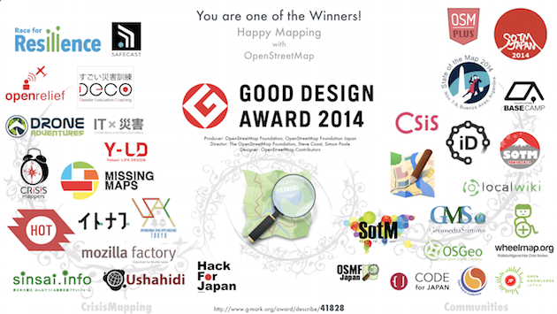

| プログラム | 学習目標 |
|---|---|
| オリエンテーション ワークショップ「マシュマロチャレンジ」 |
・アイスブレイキング、チームビルディング、メンバーの相互に理解する ・チームワークを発揮して、他チームより高いスパゲティタワーを建てる ・ニックネームを付けて相互の交流を深める |
| デジタルマップとiPadを使ったDIG（災害図上訓練）前半 〜浦安市の移り変わりを知る〜 |
・iPadでの地図の操作の仕方を理解する ・ハザードマップの見方を理解する ・浦安市の地形変遷を理解する |
| デジタルマップとiPadを使ったDIG（災害図上訓練）後半 〜浦安市直下型地震のシナリオをシミュレーションする〜 |
・震度６強のシナリオを体験する。 ・適切な地図データをiPadで表示・操作できるようになる。 ・シナリオが正しいとは限らないことを学ぶ。 |
| 災害時、学校や家庭でリーダーとして活動できる中学生になる（医療サポーター編） | ・災害時、家族が、級友が負傷している時、戸惑うのではなく、知恵と技術を持ち自分と周りの人を助けられる自分になる ・学校でのリーダーとして活動できる |
| ファーストエイド講習 | ・災害時の応急処置について学ぶ ・身の回りのものを使って怪我の悪化を防ぐ |
| 食事および就寝時 | ・非常時にできるだけゴミを出さないで食べることを学ぶ ・非常寺に健康観察の意味を理解する ・避難所で周囲に配慮をしながら、就寝場所を設置する方法を学ぶ |
| 東北被災地をめぐる対話 | ・石巻に出かける前に、東北大震災の現実や避難所の課題を学ぶ。 ・被災者と話し合える前提知識を身に付ける。 ・聞いた話を感想文をまとめる。 |
| すごい災害対応訓練 | ・よりリアルな状態で災害時の対応方法について考える ・初日に学んだことを応用する |
| iPadを使った番組制作（ふりかえり前半） | ・動画や画像などのメディアを駆使し、番組を作成する ・研修プログラムを一つのストーリにまとめる力を身につける ・リーダーとして人に伝える能力を身につける ・自分たちの学校に戻って見せられる資料づくり |
| 振り返りコーチング（振り返り前半） | ・対話によって相手の自己実現や目標達成を図る |
すごい災害訓練DECO浦安でも使用されたOpenStreetMapが「Good Design Award 2014」を受賞した。応募時にOSMの活用事例としてすごい災害訓練を紹介し、防災情報の基盤など各種の応用が期待できるとして、高い評価を受けた。

2014年11月15日（土）に日本科学未来館にて開催されたG空間EXPO2014学生フォーラムにて、すごい災害訓練DECO浦安についてポスター発表した。その発表に対し高い評価を受け、「ベストポスターセッション賞」を受賞た。
HP: http://www.g-expo.jp/forum/student.html